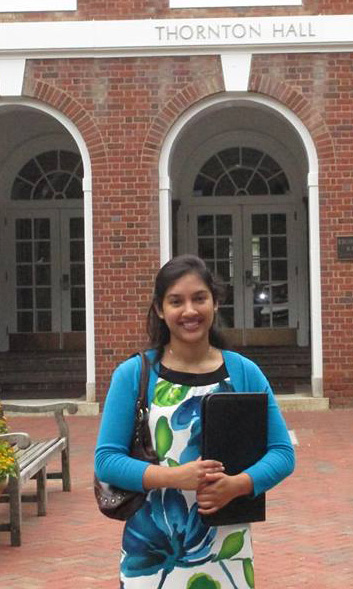

 |
Nazia Tabassum
VIVA Affiliation
Research Assistant
2014 - Present
Degrees
BSE Electrical & Computer Engineering, Duke University, 2014
MS Electrical Engineering, University of Virginia, 2016
Biographical Sketch
Nazia is a current graduate student at the University of Virginia, with VIVA. She completed her Bachelors of Science in Engineering degree in Electrical & Computer Engineering from Duke University (Durham, North Carolina) in 2014, with a concentration in signal processing. In August 2016, she received her Masters of Science degree in Electrical Engineering for her work denoising of satellite image stacks.
Research Interests
Nazia's current areas of research include image denoising, mainly of speckle noise. She is also studying segmentation of lymphatic vessels in the brain and spinal cord. However, she is just beginning her PhD program, so is open to other areas of image processing.
Publications
N. Tabassum, A. Vaccari, and S. Acton, "Speckle removal and change preservation by distance-driven anisotropic diffusion of synthetic aperture radar temporal stacks", Digital Signal Processing, vol. 74, pp. 43-55, Mar. 2018.
PDF
N. Tabassum, A. Vaccari and S. Acton, "Speckle removal by distance-driven anisotropic diffusion of SAR temporal stacks", 2015 49th Asilomar Conference on Signals, Systems and Computers, 2015. PDF
|